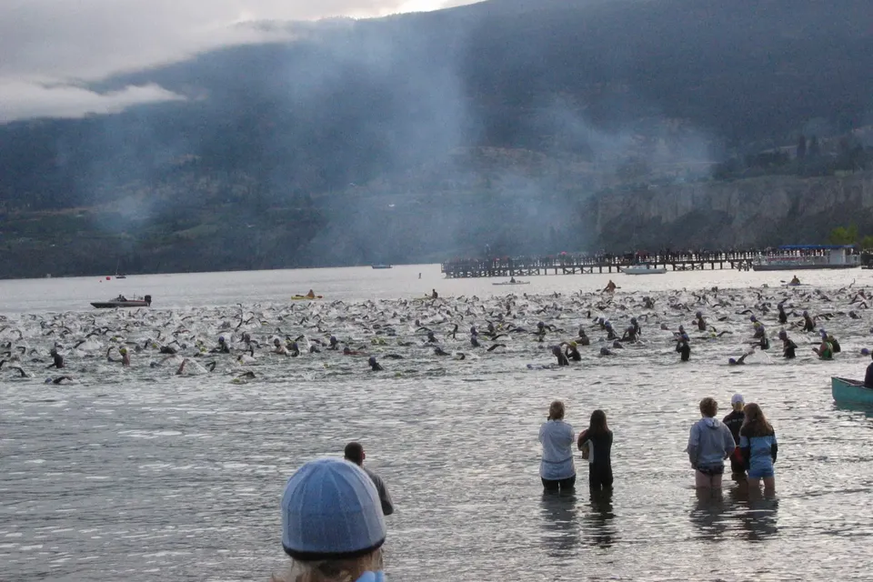

Winter is where triathlons are won: pool, turbo and treadmill
Swim start at Ironman Canada 2004, Okanagan Lake. Photo: Richard Smith, Wikimedia Commons, CC BY 2.0
The season's over, transition is packed away, and the evenings are getting colder and darker. For triathletes, this is where next year really starts: winter training. Pool, turbo trainer and treadmill are where you lay the foundations for the season ahead – and with the right plan, it's a lot more fun than it sounds.
Take a breather first
After a long season, give your body a few weeks to wind down. Go for an easy run when you feel like it, head out for a hike, ride your bike to the bakery – just leave the training plan in the drawer. This break isn't lost fitness. It's what makes you hungry for structured sessions again by December.
Winter is base-building season
There are no PBs to chase in winter. What pays off now are steady, easy sessions – the kind where you could still hold a conversation. They build the endurance that your faster spring training sits on. A bit of intensity is fine, say one session per week per discipline, but most of it stays easy.
Swimming: your technique season
In winter, the pool is your best friend. With no race pressure, you can work on your technique – and in swimming, good technique often gets you further than extra metres.
- Drills at the start of each session, while you're still fresh.
- Consistency over volume: three shorter swims a week do more than one long one.
- Join a squad at a club or a masters session – you get structure and someone keeping an eye on your stroke.
Racing in open water next summer? You can practise in the pool already: every now and then, lift your head and sight forward, just as you will at the buoy. There's more on open water in “Into the blue”.
Bike: make friends with the turbo
On the turbo trainer, every minute counts: no traffic lights, no freewheeling downhill, no stops at junctions. That's why an hour indoors often feels harder than an hour on the road.
- Easy endurance rides are the backbone – music, a series or an audiobook keep boredom at bay.
- Add structure once a week: for example a few longer blocks just above your comfortable pace.
- Fan, towel and plenty to drink – you sweat far more indoors than outside.
- Get outside when you can: on dry, bright weekends, a spin on the gravel or road bike makes a welcome change. When it's icy, keep the bike indoors.
Run: outdoors whenever you can
Running is the discipline that works best outdoors in winter. Easy runs in daylight, with a head torch or with a group are your bread and butter. The treadmill is a good fallback for icy or stormy days. Tips for cold and dark runs are in “Cold, dark and still running”.
Fancy a race over the winter? A cross-country race or a winter series is a great break from training – more in “Mud, frost and finish lines”.
Fitting it all into your week
Three sports, plus work, family and short days – it only works with a simple plan. Here's an example week with around six to eight hours of training:
| Day | Session |
|---|---|
| Monday | Rest day or strength work |
| Tuesday | Swim with drills |
| Wednesday | Turbo, one hour with short faster blocks |
| Thursday | Easy run |
| Friday | Swim, steady and relaxed |
| Saturday | Longer turbo session or a ride outside |
| Sunday | Longer easy run |
Think of it as a framework, not a fixed plan. Short on time? Cut the sessions down, but keep them regular. And if a week falls apart, don't worry – in winter, what counts is the average over many weeks.
Don't skip strength and mobility
Twenty to thirty minutes of strength work for your core, hips and legs once or twice a week makes you more stable on the bike and on the run. Plenty of exercises need no equipment at all. You'll find a selection in “Stronger legs, faster miles” – they work just as well for triathletes.
Brick sessions, winter edition
You can practise the transition indoors too: straight after a turbo session, head out for a ten- to fifteen-minute run, outside or on the treadmill. Your legs get used to that post-bike feeling, and your first brick run in spring won't feel quite so strange.
A goal makes winter easier
Training is easier when there's a date in the diary. Pick your first triathlon for next year now – sprint, Olympic or middle distance. Not sure which distance suits you? “Your first triathlon” will help.
The bottom line
Take a breather, then train easy and often: sharpen your technique in the pool, build endurance on the turbo and run outdoors whenever you can. Add a goal in the diary and a little strength work, and you'll start next season one step ahead.
Your triathlon for 2027
Sprint, Olympic or long distance: every triathlon in Germany, Austria, Switzerland and South Tyrol – with distances, location and a link to the organiser.
All tips in this article are based on experience. The example week is a suggestion, not a training plan.